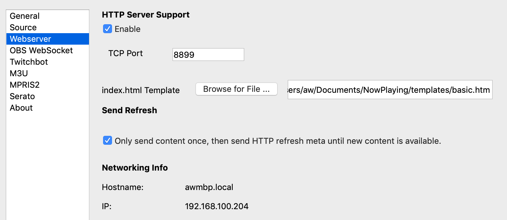

Webserver¶
What’s Now Playinghas a built-in web server that allows for a wide variety of customization and deployments, including complex ones involving multiple hosts. Treat the files in templates as examples; copy them to new names and modify them until you are happy. Change the font, change the output order, do whatever it is you need to do.
Using one of the WebSocket examples as your starting point is recommended as they are generally more predictable. They update when the song updates vs. the others that use a timer to check for updates. See more about WebSockets below.
Installation¶
Open Settings from the What’s Now Playing icon
Select OBS WebSocket from the list of available input sources.
Check Enable
Change any settings as desired. See below.
Click Save
Settings¶
{kind=link}
Setting |
Description |
|---|---|
Port |
The HTTP server’s TCP port. A firewall should protect this port for security reasons to limit which hosts will be permitted to connect. What’s Now Playing does not limit what systems may connect to it. |
HTML Template |
The Jinja2 template file to use when fetching index.html. See Templates for more information. |
Once |
Only give index.html once per title, then return an empty refresh page until the next song change. This setting is handy for providing a simple way to do fade-in and fade-out using simple HTML. |
OBS Settings¶
Once the webserver is enabled, hop into OBS and configure a Browser source. Set the size to match
the HTML template you are using. (Check the width and height values in the bundled templates).
Then place the OBS source wherever you would like.
{kind=link}
Supported URLs¶
URL |
Description |
|---|---|
/index.html (or /index.htm or just /) |
This URL generates either a title card based upon the preconfigured template or a refresh document. The title card will be given exactly once upon connection with the refresh document being returned in subsequent connections until a new track has been detected. This process allows for using fades and other HTML tricks. |
/index.txt |
Same output as the text output in the General settings. |
/cover.png |
This URL will return the cover image, if available. |
See also Artist Extras for other URLs when that set of features is enabled.
REST API¶
Currently, only a very rudimentary REST API is implememnted. /v1/last will return
a JSON-formatted string of the currently playing track.
WebSockets¶
New with version 3.0.0 is a continual feed via WebSockets. The feed is a JSON-formatted stream that
will get an update on every title change. To connect, use the URL ws://hostname:port/wsstream.
The files that begin with ws- in the templates directory use WebSockets.
Variables set should match what is on the Templates page. Be aware that values may be null.